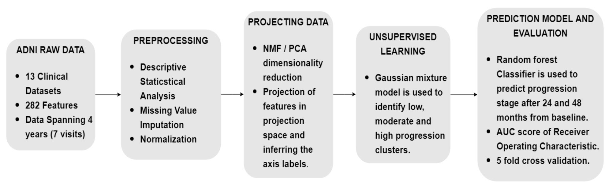
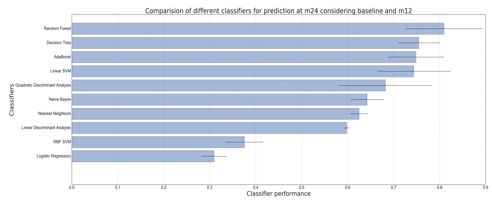
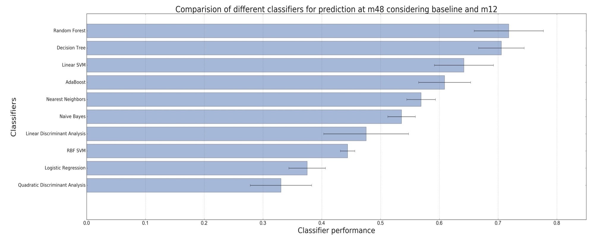
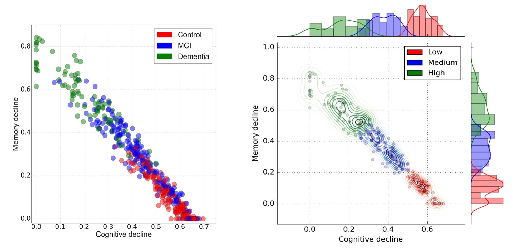
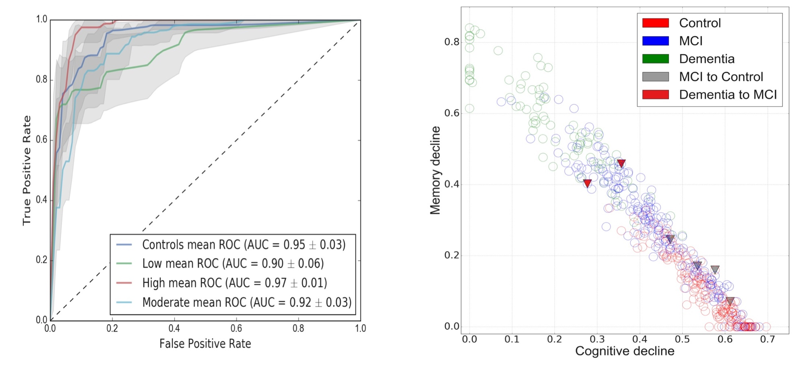
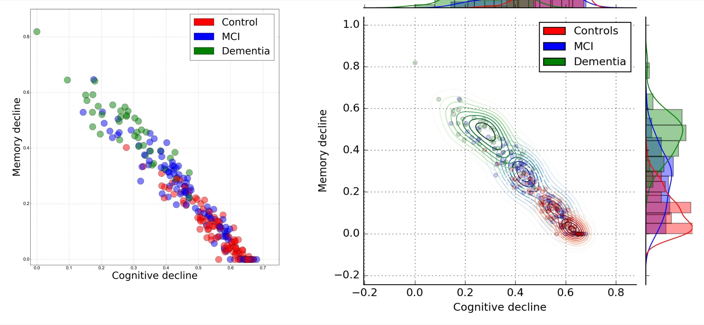
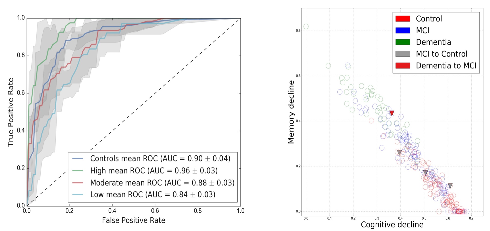
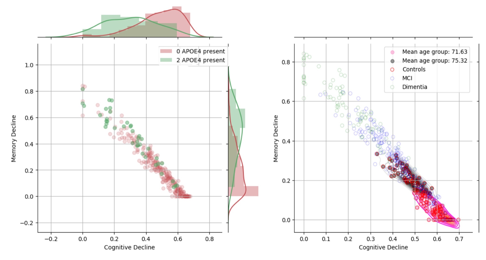
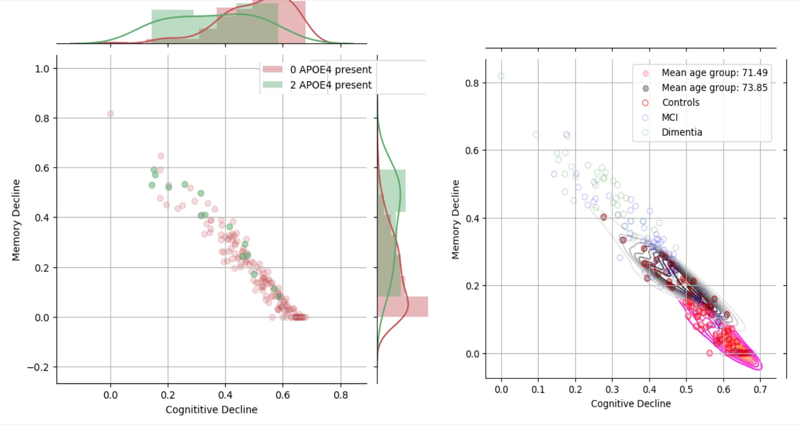

Abstract
Alzheimer’s disease (AD) is a degenerative brain disease impairing a person’s ability to perform day to day activities. The clinical manifestations of Alzheimer’s disease are characterized by heterogeneity in age, disease span, progression rate, impairment of memory and cognitive abilities. Due to these variabilities, personalized care and treatment planning, as well as patient counseling about their individual progression is limited. Recent developments in machine learning to detect hidden patterns in complex, multi-dimensional datasets provides significant opportunities to address this critical need. In this work, we use unsupervised and supervised machine learning approaches for subtype identification and prediction. We apply machine learning methods to the extensive clinical observations available at the Alzheimer’s Disease Neuroimaging Initiative (ADNI) data set to identify patient subtypes and to predict disease progression. Our analysis depicts the progression space for the Alzheimer’s disease into low, moderate and high disease progression zones. The proposed work will enable early detection and characterization of distinct disease subtypes based on clinical heterogeneity. We anticipate that our models will enable patient counseling, clinical trial design, and ultimately individualized clinical care.
Core contributions
- 1A progression space from clinical dataOver 200 longitudinal clinical measures are compressed into two interpretable axes: cognitive decline and memory decline.
- 2Three progression subtypesUnsupervised clustering separates people with MCI and dementia into low, moderate and high progression zones.
- 3Predicting the future stageFrom baseline and one-year data, a random forest predicts each patient’s progression zone at 24 months (84.5% accuracy) and 48 months (80.2%).
- 4Reversions make sensePatients who improved (dementia to MCI, or MCI to healthy) sit between the zones, a sign the space reflects real clinical change.
- 5Genetics line upAlthough genetics were not used to build the space, people with two APOE4 copies fall toward the moderate and high progression zones.
- 6Open sourceCode on GitHub and an interactive dashboard.
Method
1Data
We used the Alzheimer’s Disease Neuroimaging Initiative (ADNI): 453 people for predictions at 24 months and 248 at 48 months, including healthy controls, people with mild cognitive impairment (MCI) and people with dementia. Measures included the Montreal Cognitive Assessment, Clinical Dementia Rating, Mini Mental State Exam, Neuropsychiatric Inventory, a neuropsychological battery, the Geriatric Depression Scale, Everyday Cognition and the Functional Assessment Questionnaire. After cleaning and imputation, 218 clinical features remained.
2Progression space and subtypes
We normalized the data and used non-negative matrix factorization (rank 2) to reduce it to two dimensions, which the coefficients identified as cognitive decline and memory decline. A Gaussian mixture model, with the number of clusters chosen by the Bayesian information criterion, then found the progression subtypes.
3Prediction models
Using baseline and 12-month data, we compared ten classifiers to predict each patient’s progression zone at 24 and 48 months, with five-fold cross-validation. A random forest, tuned by grid search, was the most accurate.
Show the classifier comparison (paper Figs. 6–7)


Results
1Three progression subtypes
- Two axes summarize decline: memory decline increases upward and cognitive decline increases to the left, so progression runs from bottom right to top left.
- Three zones of low, moderate and high progression emerge among people with MCI and dementia.

2Predicting each patient’s stage
- Two years ahead: 84.5% accuracy, with an AUC of 0.97 for the high-progression group.
- Four years ahead: 80.2% accuracy, still with an AUC of 0.96 for the high-progression group.
- Reversions land in between: people who moved from dementia back to MCI, or from MCI to healthy, sit in the intermediate regions of the space.
| Prediction | Accuracy | Control | Low | Moderate | High |
|---|---|---|---|---|---|
| At 24 monthsAUC per group | 84.5% | 0.95 | 0.90 | 0.92 | 0.97 |
| At 48 monthsAUC per group | 80.2% | 0.90 | 0.84 | 0.88 | 0.96 |

Show the 48-month results (paper Figs. 5 and 8)


Analysis
1Genetics and ageing
- APOE4 tracks progression: people with no APOE4 copies cluster in the low-progression zone, while those with two copies lean toward moderate and high progression, even though APOE4 was not used to build the space.
- Healthy ageing is visible too: among controls, the group closer to the moderate zone is older on average (about 75 vs. 71 years).

Show the 48-month version (paper Fig. 9)

BibTeX
@article{satone2018learning,
title = {Learning the progression and clinical subtypes of
{Alzheimer's} disease from longitudinal clinical data},
author = {Satone, Vipul and Kaur, Rachneet and Faghri, Faraz and
Nalls, Mike A and Singleton, Andrew B and Campbell, Roy H},
journal = {Machine Learning for Health (ML4H) Workshop at NeurIPS},
year = {2018},
eprint = {1812.00546},
archivePrefix = {arXiv},
url = {https://arxiv.org/abs/1812.00546}
}Acknowledgments
This work was supported in part by the Intramural Research Programs of the National Institute on Aging (NIA) Z01-AG000949-02. Data collection and sharing for this project was funded by the Alzheimer’s Disease Neuroimaging Initiative (ADNI) (National Institutes of Health Grant U01 AG024904) and DOD ADNI (Department of Defense award number W81XWH-12-2-0012). ADNI is funded by the National Institute on Aging, the National Institute of Biomedical Imaging and Bioengineering, and through contributions from private-sector partners, facilitated by the Foundation for the National Institutes of Health. Data used in preparation of this work were obtained from the ADNI database; the ADNI investigators contributed to the design and implementation of ADNI and/or provided data but did not participate in analysis or writing of this report.